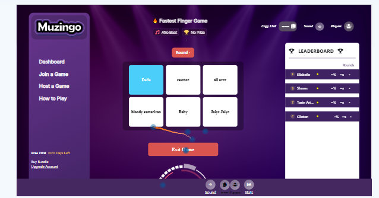
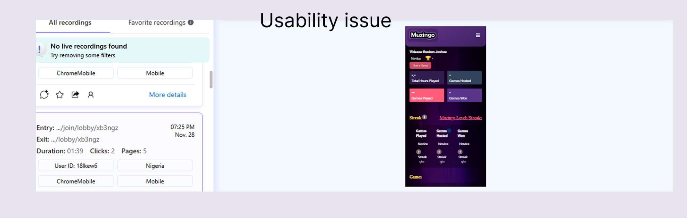
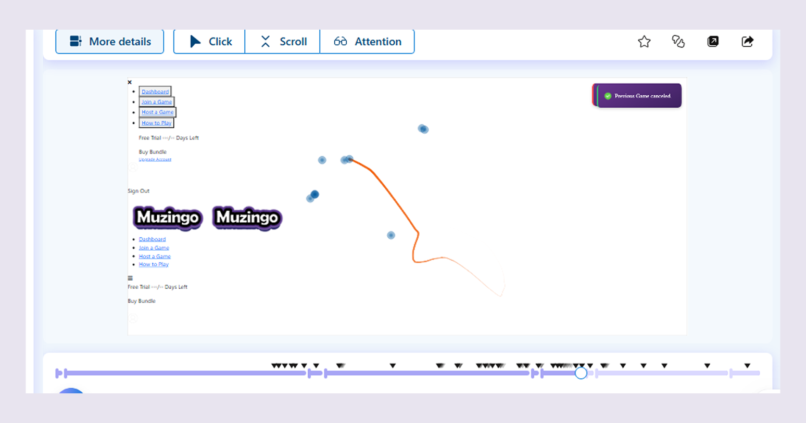
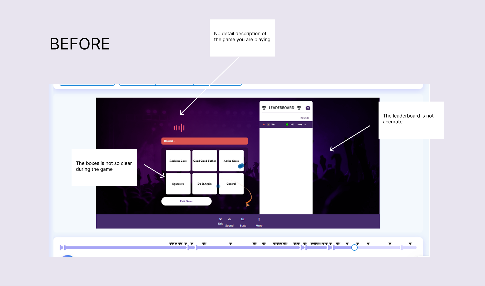
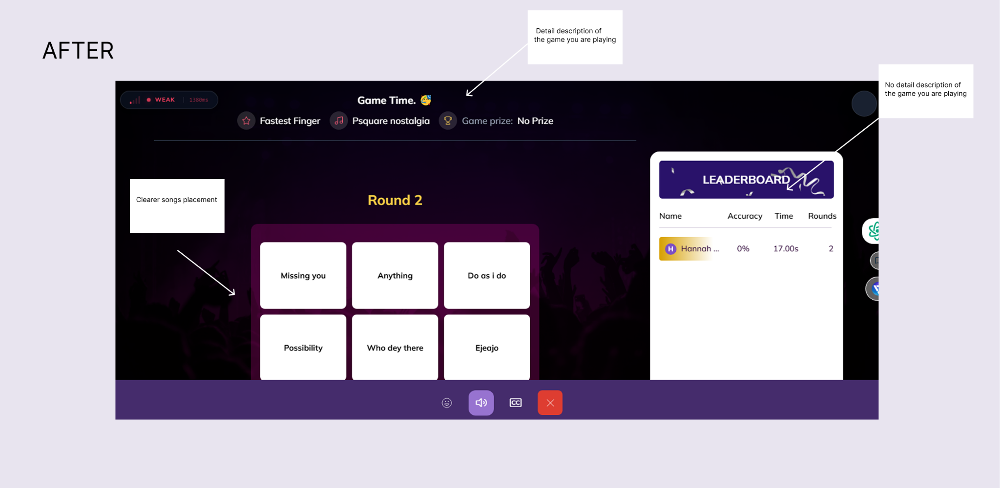

Improving Player Experience Through Behavioral Analytics
Muzingo — Understanding Drop-offs, Friction & Engagement
UX Researcher • Behavioral Analytics • Session Replay • Usability Testing
Tool Used
Microsoft Clarity
Key Findings
3
Friction Areas Mapped
5
Focus
Drop-off & Engagement
The Challenge
Muzingo was attracting players across different markets, but the team had limited visibility into what happened after users entered the platform.
Analytics could show visits, activity, and drop-offs, but they didn't explain what was happening before users left.
We needed to understand:
- Where players were getting stuck
- What was interrupting gameplay
- Which usability issues were creating friction
- Which technical issues were affecting the experience
- What was preventing users from completing key actions
The goal wasn't simply to understand where players dropped off. It was to understand what was happening before they did.

Why This Research Mattered
When users leave a product, analytics can tell you where the drop-off happened.
Behavioral analysis helps uncover why.
By observing real sessions, we could identify friction that users might not have reported themselves — from navigation and gameplay issues to technical interruptions.
This gave the team a clearer view of the player experience beyond what traditional analytics could show.
My Role
UX Researcher
I:
- Conducted session analysis using Microsoft Clarity
- Monitored user behaviour across devices and locations
- Identified recurring usability and technical issues
- Analysed drop-off patterns
- Documented and synthesised findings
- Presented insights to Product and Engineering teams
- Followed recommended improvements through implementation
Research Approach
Rather than relying only on what users said, I focused on observing what they actually did.
Methods
- Session Replay Analysis
- Behavioural Analytics
- Drop-off Analysis
- User Journey Evaluation
- Issue Prioritisation
- Research Synthesis
I reviewed real user sessions to identify patterns, understand points of friction, and separate isolated issues from problems that appeared repeatedly across the experience.

What We Found
The research revealed that player drop-offs were not always caused by a lack of interest in the product.
Users were actively exploring Muzingo, attempting to participate, and trying to complete key actions. However, recurring usability and technical issues interrupted their journeys.
01 — Players Were Actively Trying to Engage
Users were not simply arriving and leaving.
Sessions showed players:
- Exploring features
- Attempting to join games
- Hosting games
- Moving through different parts of the platform
- Trying to complete key actions
The problem was often what happened during the journey, not whether users were interested in the product.


02 — Small Friction Points Interrupted the Experience
Repeated sessions revealed friction around:
- Navigation
- Game setup
- Feature discoverability
- Button and interaction patterns
- Loading and responsiveness
Individually, these issues could appear small.
Across repeated sessions, they created a much bigger problem: users were interrupted before they could fully engage with the experience.
03 — Technical Issues Were Also Part of the UX
Not every drop-off was caused by an interface problem.
Behavioral analysis also surfaced issues involving:
- Loading
- Responsiveness
- Platform stability
- Gameplay interruptions
This helped the team see that the player experience was being shaped by both interface usability and technical performance.
Key Insight
Users weren't leaving because they lacked interest in Muzingo.
They were often trying to engage, but usability and technical issues interrupted their experience before they could complete what they came to do.
The research showed that improving the player experience required looking beyond overall drop-off numbers and understanding the moments that caused users to struggle.
Users weren't leaving because they lacked interest in Muzingo.
They were often trying to engage, but usability and technical issues interrupted their experience before they could finish what they came to do.
From Insight to Improvement
The behavioural findings helped identify areas where deeper usability investigation was needed.
Rather than treating the analytics findings as the final answer, they became a starting point for further investigation and product improvement.
The insights helped the team:
- Identify flows that needed closer usability evaluation
- Prioritise recurring friction points
- Investigate problems affecting navigation and gameplay
- Explore improvements to game setup and participation
- Connect behavioural evidence with product and engineering decisions
- Redesign of screens and flows


Impact
The research helped shift product discussions from assumptions about player behaviour to evidence from real user sessions.
My findings helped teams:
- Prioritise usability issues based on frequency and impact
- Identify technical friction affecting gameplay
- Improve navigation and feature discoverability
- Surface issues affecting game setup and participation
- Prioritise fixes based on severity and player impact
- Create a stronger feedback loop between user behaviour, product decisions, and engineering improvements
The work contributed to a more reliable and intuitive player experience by connecting what users did, where they struggled, and what the product needed to improve.
Project Reflection
This project reinforced something I continue to apply in research: what users do can reveal problems they may never think to report.
Session replay gave the team a way to see those moments directly.
Instead of looking at a drop-off as simply a number, we could investigate what happened before it — and use that evidence to decide where deeper research and product improvements were needed.